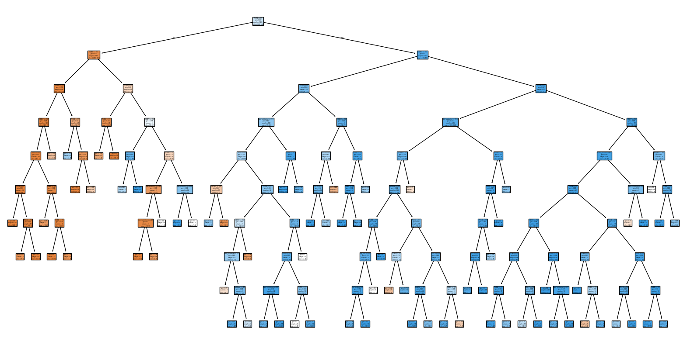

Optimize MOOC learner pathways#
In this section, we propose a learning item recommendation system based on consensus clustering (MultiCons) and collaborative filtering.
The approach consists of first grouping learners into homogeneous groups based on their profile and learning activities in the course using consensus clustering.
Then, for each student cluster, collaborative filtering is applied to recommend previously unexplored learning items.
We measure the quality of our approach by first training a decision tree classifier predicting certification success, then comparing changes in success predictions when students whose failure had previously been correctly predicted follow the recommendations.
Finally, we compare the quality of our approach to a baseline method that applies collaborative filtering on the full dataset.
import numpy as np
import pandas as pd
from IPython.display import Markdown, display
from matplotlib import pyplot as plt
from sklearn.cluster import OPTICS, AgglomerativeClustering, Birch, KMeans
from sklearn.mixture import GaussianMixture
from sklearn.model_selection import GridSearchCV, StratifiedKFold, train_test_split
from sklearn.tree import DecisionTreeClassifier, plot_tree
from surprise import Dataset, KNNWithMeans, Reader
from surprise.model_selection import GridSearchCV as SupGridSearchCV
from multicons import MultiCons
from oulad import filter_by_module_presentation, get_oulad
%load_ext oulad.capture
Preparing the dataset#
In this section we:
Load the OULAD dataset
Select a subset related to a course session
Prepare the student interaction and student profile feature tables
Loading OULAD#
%%capture oulad
oulad = get_oulad()
Selecting one course session#
We start by selecting one OULAD course session.
We choose the BBB course from the 2013J session.
CODE_MODULE = "BBB"
CODE_PRESENTATION = "2013J"
The student_item table#
It represents all student interactions with course items of the selected course session.
%%capture -ns optimize_mooc_learner_pathways student_registration student_item
student_registration = (
filter_by_module_presentation(
oulad.student_registration, CODE_MODULE, CODE_PRESENTATION
)
# Remove students that unregistered before the course started.
.query("~(date_unregistration < 0)")
.drop(["date_unregistration"], axis=1)
.set_index("id_student")
)
student_item = (
filter_by_module_presentation(oulad.student_vle, CODE_MODULE, CODE_PRESENTATION)
.query("id_student in @student_registration.index")
.drop(["date"], axis=1)
.groupby(["id_site", "id_student"])
.sum()
.reset_index()
# We convert the `id_site` column to string type as the values of `id_site` will
# be used as column names in the `student_profile` table.
# student_item.id_site = student_item.id_site.astype(str)
.astype({"id_site": str, "sum_click": float})[
["id_student", "id_site", "sum_click"]
]
)
display(student_item)
| id_student | id_site | sum_click | |
|---|---|---|---|
| 0 | 23798 | 703721 | 169.0 |
| 1 | 27759 | 703721 | 123.0 |
| 2 | 30091 | 703721 | 229.0 |
| 3 | 31014 | 703721 | 130.0 |
| 4 | 31849 | 703721 | 336.0 |
| ... | ... | ... | ... |
| 67312 | 2400851 | 704240 | 2.0 |
| 67313 | 2464683 | 704240 | 2.0 |
| 67314 | 2512392 | 704240 | 1.0 |
| 67315 | 2638818 | 704240 | 1.0 |
| 67316 | 2642717 | 704240 | 1.0 |
67317 rows × 3 columns
The student_profile table#
It contains student demographic data along with course registration information, course item interactions, and the final result.
It also lets us identify students that have no interaction records or have unregistered before the course started, which we exclude.
We consider students marked with a final result of Withdrawn and Fail as failed
and students marked with Pass or Distinction as succeded.
Finally, we encode all ordinal categorical values to nummerical values.
student_activity = student_item.pivot_table(
values="sum_click",
index="id_student",
columns="id_site",
fill_value=0.0,
)
student_profile = (
filter_by_module_presentation(oulad.student_info, CODE_MODULE, CODE_PRESENTATION)
.set_index("id_student")
.drop(["num_of_prev_attempts", "region"], axis=1)
.join(student_registration, how="inner")
.join((student_activity > 0).astype(float), how="inner")
.fillna(0.0)
.replace(
{
"age_band": {"0-35": "0.0", "35-55": "0.5", "55<=": "1.0"},
"disability": {"N": "0.0", "Y": "1.0"},
"gender": {"M": "0.0", "F": "1.0"},
"highest_education": {
"No Formal quals": "0.0",
"Lower Than A Level": "0.25",
"A Level or Equivalent": "0.5",
"HE Qualification": "0.75",
"Post Graduate Qualification": "1.0",
},
"imd_band": {
# Using 0.0 instead of np.nan as NA's have been filled with zeros.
0.0: "0.0",
"0-10%": "5.0",
# The OULAD data set is missing the `%` in the `10-20` imd_band.
"10-20": "15.0",
"20-30%": "25.0",
"30-40%": "35.0",
"40-50%": "45.0",
"50-60%": "55.0",
"60-70%": "65.0",
"70-80%": "75.0",
"80-90%": "85.0",
"90-100%": "95.0",
},
"final_result": {
"Withdrawn": "",
"Fail": "",
"Pass": "1",
"Distinction": "1",
},
}
)
.astype(
{
"age_band": float,
"disability": float,
"gender": float,
"highest_education": float,
"imd_band": float,
"final_result": bool,
}
)
)
display(student_profile)
| gender | highest_education | imd_band | age_band | studied_credits | disability | final_result | date_registration | 703721 | 703722 | ... | 704231 | 704232 | 704233 | 704234 | 704235 | 704236 | 704237 | 704238 | 704239 | 704240 | |
|---|---|---|---|---|---|---|---|---|---|---|---|---|---|---|---|---|---|---|---|---|---|
| id_student | |||||||||||||||||||||
| 23798 | 0.0 | 0.50 | 55.0 | 0.0 | 60 | 0.0 | True | -27.0 | 1.0 | 1.0 | ... | 0.0 | 0.0 | 0.0 | 0.0 | 0.0 | 0.0 | 0.0 | 0.0 | 0.0 | 0.0 |
| 27759 | 0.0 | 0.25 | 45.0 | 0.5 | 120 | 1.0 | False | -43.0 | 1.0 | 1.0 | ... | 0.0 | 0.0 | 0.0 | 0.0 | 0.0 | 0.0 | 0.0 | 0.0 | 0.0 | 0.0 |
| 30091 | 1.0 | 0.50 | 15.0 | 0.0 | 60 | 1.0 | True | -145.0 | 1.0 | 1.0 | ... | 0.0 | 0.0 | 0.0 | 0.0 | 0.0 | 0.0 | 0.0 | 0.0 | 0.0 | 0.0 |
| 31014 | 1.0 | 0.25 | 85.0 | 0.5 | 120 | 0.0 | False | -43.0 | 1.0 | 1.0 | ... | 0.0 | 0.0 | 0.0 | 0.0 | 0.0 | 0.0 | 0.0 | 0.0 | 0.0 | 0.0 |
| 31849 | 1.0 | 0.25 | 65.0 | 0.5 | 120 | 0.0 | True | -128.0 | 1.0 | 1.0 | ... | 0.0 | 0.0 | 0.0 | 0.0 | 0.0 | 0.0 | 1.0 | 0.0 | 0.0 | 0.0 |
| ... | ... | ... | ... | ... | ... | ... | ... | ... | ... | ... | ... | ... | ... | ... | ... | ... | ... | ... | ... | ... | ... |
| 2680344 | 1.0 | 0.75 | 85.0 | 0.5 | 60 | 0.0 | True | -25.0 | 1.0 | 1.0 | ... | 0.0 | 0.0 | 0.0 | 0.0 | 1.0 | 0.0 | 0.0 | 0.0 | 0.0 | 0.0 |
| 2680885 | 1.0 | 0.25 | 55.0 | 0.0 | 60 | 1.0 | True | -141.0 | 1.0 | 1.0 | ... | 0.0 | 0.0 | 0.0 | 0.0 | 0.0 | 0.0 | 0.0 | 0.0 | 0.0 | 0.0 |
| 2691100 | 1.0 | 0.25 | 5.0 | 0.0 | 120 | 0.0 | True | -141.0 | 1.0 | 1.0 | ... | 0.0 | 0.0 | 0.0 | 0.0 | 0.0 | 0.0 | 0.0 | 0.0 | 0.0 | 0.0 |
| 2691566 | 1.0 | 0.25 | 5.0 | 0.0 | 60 | 0.0 | False | -109.0 | 1.0 | 0.0 | ... | 0.0 | 0.0 | 0.0 | 0.0 | 0.0 | 0.0 | 0.0 | 0.0 | 0.0 | 0.0 |
| 2693772 | 1.0 | 0.25 | 35.0 | 0.0 | 60 | 0.0 | False | -49.0 | 1.0 | 0.0 | ... | 0.0 | 0.0 | 0.0 | 0.0 | 0.0 | 0.0 | 0.0 | 0.0 | 0.0 | 0.0 |
1851 rows × 328 columns
Train/Test split#
In this section we split the student_profile table into training and
testing sets and standartize feature values.
RANDOM_STATE = 0
feature_table = student_profile.drop(["final_result"], axis=1)
x_train, x_test, y_train, y_test = train_test_split(
feature_table,
student_profile.final_result,
test_size=0.2,
random_state=RANDOM_STATE,
)
Final result prediction#
Next, we train a decision tree model to predict the student final_result outcome.
The model will be used at the final step to evaluate the quality of the
recommendations.
%%capture -ns optimize_mooc_learner_pathways gs_classifier
# Hyperparameter search space
hyperparameters = {
"criterion": ["gini"], # ["gini", "entropy", "log_loss"],
"splitter": ["best"], # ["random", "best"],
"max_depth": [9], # [None, *list(range(1, 20))],
"min_samples_split": [13], # range(2, 20),
"min_samples_leaf": [6], # range(1, 20),
"random_state": [RANDOM_STATE],
}
# Train Decision tree
gs_classifier = GridSearchCV(
DecisionTreeClassifier(),
hyperparameters,
scoring="precision",
n_jobs=-1,
error_score="raise",
cv=StratifiedKFold(n_splits=3, shuffle=True, random_state=RANDOM_STATE),
).fit(x_train, y_train)
display(Markdown("#### Decision Tree"))
plt.figure(figsize=(20, 10))
plot_tree(
gs_classifier.best_estimator_,
feature_names=x_train.columns.values.tolist(),
filled=True,
)
plt.show()
display(Markdown(f"Precision: {gs_classifier.score(x_test, y_test):.4f}"))
display(Markdown(f"Decision Tree Parameters: {gs_classifier.best_params_}"))
predictions = gs_classifier.predict(x_test)
display(
Markdown(
f"Out of {(~y_test).sum()} failing students, the model predicted "
f"correctly {(~predictions[~y_test]).sum()} failing students "
f"({100 * (~predictions[~y_test]).sum() / (~y_test).sum():.2f}%)"
)
)
Decision Tree
Precision: 0.8475
Decision Tree Parameters: {‘criterion’: ‘gini’, ‘max_depth’: 9, ‘min_samples_leaf’: 6, ‘min_samples_split’: 13, ‘random_state’: 0, ‘splitter’: ‘best’}
Out of 147 failing students, the model predicted correctly 113 failing students (76.87%)
Consensus clustering#
Base clusterings#
At this stage we train our base clustering models which will be used in the MultiCons Consensus algorithm.
%%capture -ns optimize_mooc_learner_pathways base_clusterings consensus
base_clusterings = [
KMeans(
n_clusters=18, max_iter=4000, n_init="auto", random_state=RANDOM_STATE
).fit_predict(feature_table),
AgglomerativeClustering(n_clusters=19).fit_predict(feature_table),
GaussianMixture(n_components=19, random_state=RANDOM_STATE).fit_predict(
feature_table
),
Birch(n_clusters=8, threshold=0.3).fit_predict(np.ascontiguousarray(feature_table)),
OPTICS(min_samples=11).fit_predict(feature_table),
]
def search_best_merging_threshold(clusterings, mt_range):
"""Loops over mt_range and returns the most similar fitted MultiCons instance."""
max_score = 0
selected_consensus = None
for merging_threshold in mt_range:
multicons = MultiCons(
consensus_function="consensus_function_12",
merging_threshold=merging_threshold,
).fit(clusterings)
score = multicons.ensemble_similarity[multicons.recommended]
if score > max_score:
max_score = score
selected_consensus = multicons
return selected_consensus
consensus = search_best_merging_threshold(base_clusterings, [0.5, 0.75])
display(
f"MultiCons: selected merging_threshold={consensus.merging_threshold} "
f"with score: {consensus.ensemble_similarity[consensus.recommended]:0.2f}"
)
display(consensus.cons_tree())
display(
pd.DataFrame(
{"multicons": consensus.labels_, "final_result": student_profile.final_result}
)
.groupby(["multicons", "final_result"])
.size()
.to_frame()
)
'MultiCons: selected merging_threshold=0.5 with score: 0.39'
| 0 | ||
|---|---|---|
| multicons | final_result | |
| 0 | False | 15 |
| True | 5 | |
| 1 | False | 9 |
| True | 34 | |
| 2 | False | 24 |
| True | 17 | |
| 3 | False | 31 |
| True | 28 | |
| 4 | False | 24 |
| True | 27 | |
| 5 | False | 19 |
| True | 42 | |
| 6 | False | 34 |
| True | 39 | |
| 7 | False | 16 |
| True | 54 | |
| 8 | False | 32 |
| True | 50 | |
| 9 | False | 24 |
| True | 48 | |
| 10 | False | 32 |
| True | 35 | |
| 11 | False | 36 |
| True | 67 | |
| 12 | False | 56 |
| True | 37 | |
| 13 | False | 55 |
| True | 41 | |
| 14 | False | 53 |
| True | 78 | |
| 15 | False | 52 |
| True | 133 | |
| 16 | False | 92 |
| True | 101 | |
| 17 | False | 78 |
| True | 129 | |
| 18 | False | 97 |
| True | 107 |
Collaborative filtering#
Next, for each consensus group we train a collaborative filtering model.
%%capture -ns optimize_mooc_learner_pathways recommenders_mc
def get_trained_recommenders(labels, algo, parameters) -> dict:
"""Returns a dictionary of trained recommenders by label."""
recommenders = {}
for label in np.unique(labels):
mask = labels == label
subset = student_item[student_item.id_student.isin(feature_table.index[mask])]
reader = Reader(rating_scale=(0, subset.sum_click.max()))
data = Dataset.load_from_df(subset, reader)
grid_search = SupGridSearchCV(algo, parameters, cv=3, refit=True, n_jobs=-1)
grid_search.fit(data)
# display(Markdown("Label=%s RMSE=%.3f" % (label, gs.best_score["rmse"])))
recommenders[label] = grid_search
return recommenders
sim_options = {
"name": ["msd"], # ["msd", "cosine"],
"min_support": [4], # [3, 4, 5],
"user_based": [False], # [False, True],
}
param_grid = {"sim_options": sim_options, "verbose": [False]}
recommenders_mc = get_trained_recommenders(consensus.labels_, KNNWithMeans, param_grid)
Recommendation#
At this stage we generate recommedations for students that were predicted as failling. We simulate students to follow N recommendations and measure whether it changes the estimated success rate.
%%capture -ns optimize_mooc_learner_pathways results_mc
def get_recommendation_results(labels, recommenders):
"""Returns the percentages of succeeding students by recommendation count."""
final_result_predictions = []
student_ids = y_test[~predictions].index
label_by_student = pd.Series(labels, index=feature_table.index)[student_ids]
for student_id in student_ids:
algo = recommenders[label_by_student[student_id]]
student = x_test.loc[student_id]
side_id_prediction = {"site_id": [], "prediction": []}
for site_id in student_activity.columns[student[student_activity.columns] == 0]:
prediction = algo.predict(student_id, site_id)
if prediction.details.get("was_impossible"):
continue
prediction = int(prediction.est)
if prediction:
side_id_prediction["site_id"].append(site_id)
side_id_prediction["prediction"].append(prediction)
recommendations = pd.Series(
side_id_prediction["prediction"], index=side_id_prediction["site_id"]
).sort_values(ascending=False)
following_recommendation_students = []
for recommendation_follow_count in range(1, 15):
new_student = student.copy()
new_student.loc[recommendations.index[:recommendation_follow_count]] = 1
following_recommendation_students.append(new_student)
final_result_predictions.append(
gs_classifier.predict(pd.DataFrame(following_recommendation_students))
)
return (
pd.DataFrame(final_result_predictions, columns=range(1, 15))
.sum()
.mul(100)
.div(len(student_ids))
)
results_mc = get_recommendation_results(consensus.labels_, recommenders_mc)
recommendation_improvement_rate_mc_cf_df = pd.DataFrame(
results_mc, columns=["multicons_collaborative_filtering"], index=range(1, 15)
)
display(recommendation_improvement_rate_mc_cf_df)
| multicons_collaborative_filtering | |
|---|---|
| 1 | 5.405405 |
| 2 | 8.108108 |
| 3 | 12.837838 |
| 4 | 16.216216 |
| 5 | 25.675676 |
| 6 | 35.135135 |
| 7 | 43.243243 |
| 8 | 50.675676 |
| 9 | 55.405405 |
| 10 | 60.810811 |
| 11 | 62.162162 |
| 12 | 64.189189 |
| 13 | 64.189189 |
| 14 | 68.243243 |
Validation#
Finally, we compare the quality of our approach witha baseline method that applies collaborative filtering on the full dataset.
%%capture -ns optimize_mooc_learner_pathways recommenders_cf results_cf
single_cluster = np.zeros(student_profile.shape[0])
recommenders_cf = get_trained_recommenders(single_cluster, KNNWithMeans, param_grid)
results_cf = get_recommendation_results(single_cluster, recommenders_cf)
recommendation_improvement_rate_mc_cf_df["collaborative_filtering"] = results_cf
display(recommendation_improvement_rate_mc_cf_df)
| multicons_collaborative_filtering | collaborative_filtering | |
|---|---|---|
| 1 | 5.405405 | 0.675676 |
| 2 | 8.108108 | 6.081081 |
| 3 | 12.837838 | 12.162162 |
| 4 | 16.216216 | 18.243243 |
| 5 | 25.675676 | 25.675676 |
| 6 | 35.135135 | 35.810811 |
| 7 | 43.243243 | 43.918919 |
| 8 | 50.675676 | 53.378378 |
| 9 | 55.405405 | 54.054054 |
| 10 | 60.810811 | 59.459459 |
| 11 | 62.162162 | 62.837838 |
| 12 | 64.189189 | 66.891892 |
| 13 | 64.189189 | 68.243243 |
| 14 | 68.243243 | 72.297297 |
recommendation_improvement_rate_mc_cf_df.plot(
title="Precentage of succeding students by number of applied recommendations",
xlabel="Recommendation count",
ylabel="Success percentage",
xticks=recommendation_improvement_rate_mc_cf_df.index,
)
display()